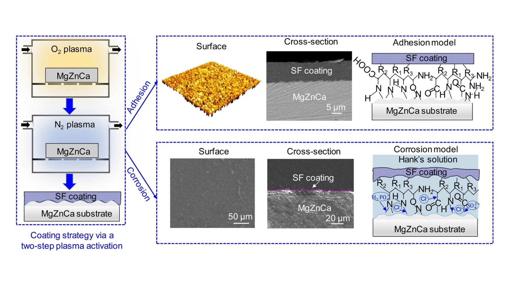

July 17, 2023
About Shicheng Zhou
I grew up in Ya'an, Sichuan, China, the hometown of pandas and the origin of artificial planting tea of the world.
During my past 24 years, I spent most of my lifetimes studying in different cities.
Ya'an, Chengdu, Harbin, Tokyo...
I am now pursuing my Ph.D. degree major in Biomedical Engineering at UTokyo.

Research
What will the future life be like?
Emerging novel electronics, materials, and biology technologies bring us closer to a colorful and healthy lifestyle.
New possibilities are hidden in the intersection of multidisciplinary knowledge to ameliorate our lives.
As a result, it is a critical issue in the medical field to develop new functional biomaterials and biodevices.
I am now engaging the research on functional materials for realizing innovative medical systems.
As a science seeker, I believe that our mission is to leverage the knowledge and technology obtained in the laboratory to produce products that can be beneficial for society.

I was awarded a scholarship from the president of the Kishimoto Estate @ Japan-China Friendship Center
Thank you! Kishimoto san for your valuable contribution to fostering friendship between Japan and China.

A wonderful trip to Kyoto

Recently, two types of the micronedles were successfully realized by fully biocompatible materials!
October 1, 2021 - Present
Cooperator: Honda, Toppan, Sanyo-Kasei
✓ Developing wearable biosensor for continuous monitor of biomarkers
Nikkei News,
UTokyo,
Honda,
Toppan,
Sanyo-Chemical
September 1, 2019 - July 1, 2021
✓ Developed UV/O3 assisted deposition method of PDA coatings on Zn with ultra-high speeds
✓ Investigated the biocompatibility & in vitro corrosion behavior of Zn/PDA structure
September 1, 2019 - July 1, 2021

✓ Developed direct coating method and proposed the surface activation mechanism on Mg alloys
✓ Studied the corrosion behavior and evaluated the in vivo biocompatibility of coated Mg alloy
September 1, 2019 - July 1, 2020
Cooperator: Hisilicon, Huawei Co. Ltd.
✓ Conducted surface characterization, bonding method design, and strength measurement
✓ Carried out data processing and analysis; Reported project progress in the monthly meeting
September 1, 2018 - July 1, 2021
✓ Developed room-temperature direct bonding method as well as bonding pairs recycled method
✓ Studied the reliability of bonding pairs and proposed silicon-based bonding mechanism